2-1 VTuber紹介
筑駒初(?)の公式VTuberたちです。至らぬ点が無数にあるとは思いますが暖かく見守ってくださると、泣いて喜びます。
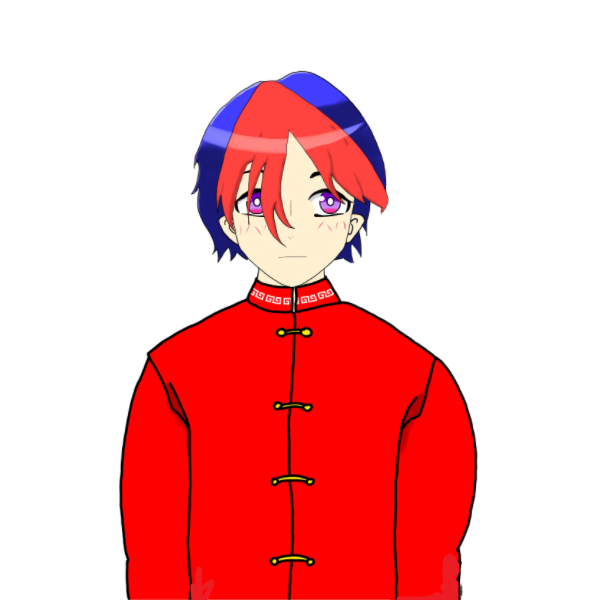
オリハ
「はじめまして淡路オリハです。こう見えてバイオリン
が弾けたりLive2Dがいじれたりします。この特技？の
おかげでデコのモデリングを担当しています。
よろしくお願いします。」
「はじめまして淡路オリハです。こう見えてバイオリン
が弾けたりLive2Dがいじれたりします。この特技？の
おかげでデコのモデリングを担当しています。
よろしくお願いします。」
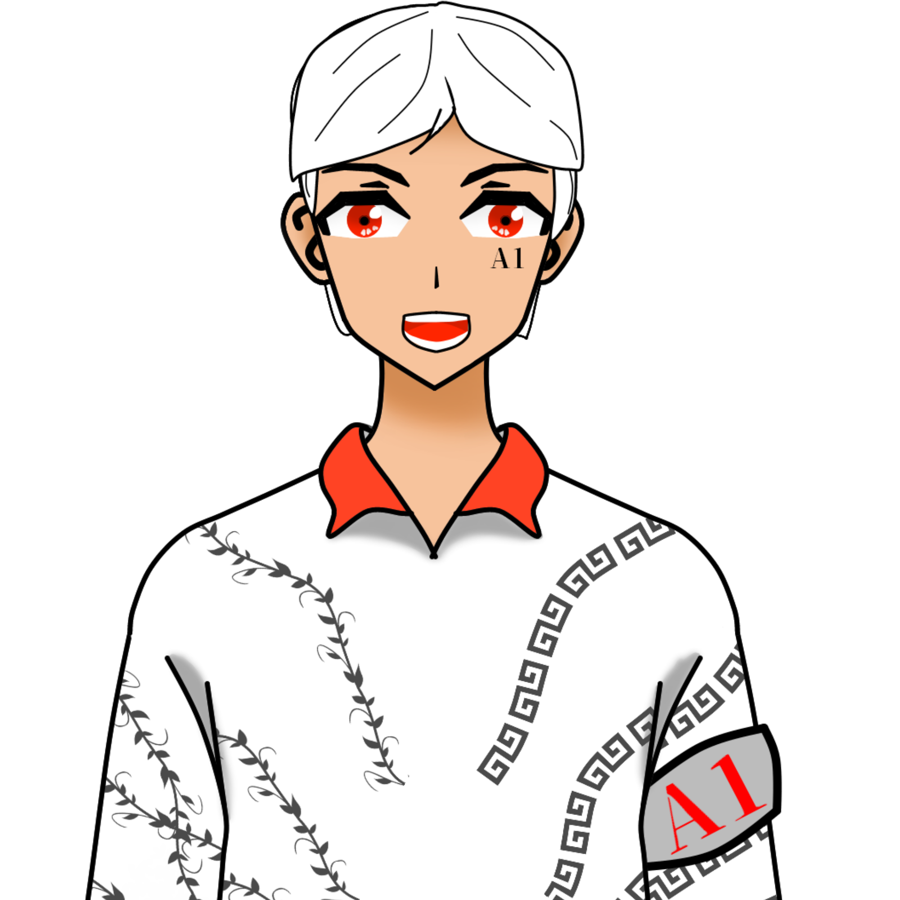
エリック
「こんにちは！エリックです！趣味は、えーっと読書とか
読書とかです。極めて常識的な筑駒生です。←これ大事！
よろしくお願いします！」
「こんにちは！エリックです！趣味は、えーっと読書とか
読書とかです。極めて常識的な筑駒生です。←これ大事！
よろしくお願いします！」
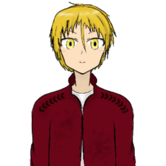
カノン
「はじめまして、私の名前は御厨カノンです。
筑駒クイズ研究会所属、読書が趣味のインドア少年です。
でも意外と運動が出来たり……。よろしくお願いします。」
「はじめまして、私の名前は御厨カノンです。
筑駒クイズ研究会所属、読書が趣味のインドア少年です。
でも意外と運動が出来たり……。よろしくお願いします。」
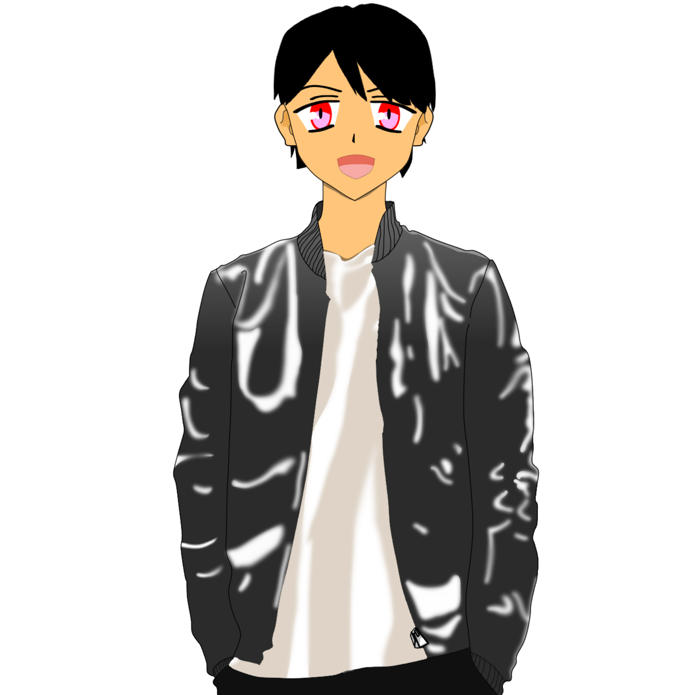
キノ
「俺の名前は木野左京。卓ゲ―の好きなごく一般的な
筑駒生だ。ルールを読み込み可能な限り自由なプレイを
心掛けているぞ。興味を持ってもらえたなら動画の方を
よろしくな！」
「俺の名前は木野左京。卓ゲ―の好きなごく一般的な
筑駒生だ。ルールを読み込み可能な限り自由なプレイを
心掛けているぞ。興味を持ってもらえたなら動画の方を
よろしくな！」
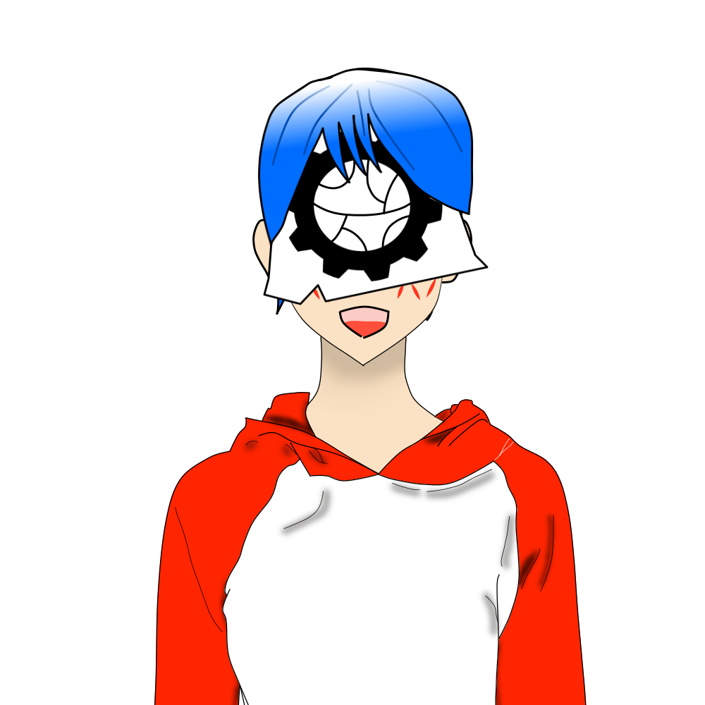
レオ
「どうもーレオでーす。趣味はYoutube鑑賞と音楽視聴
です。つい最近Apple Musicのストリーミングの存在を
知ったのですが、あれはいいですね。最近ミスチルに
どっぷりハマってます。宜しくお願いしまーす。」
「どうもーレオでーす。趣味はYoutube鑑賞と音楽視聴
です。つい最近Apple Musicのストリーミングの存在を
知ったのですが、あれはいいですね。最近ミスチルに
どっぷりハマってます。宜しくお願いしまーす。」
協力してくださったVTuberの皆さま
VTuberについての質問に答えてくださった方々の公式Twitterアカウントです。ぜひ動画をご覧になってから資料を読んでみてください。
立ち絵の使用を許可してくださった方ありがとうございました。
以下敬称略です、ご容赦ください。
星野ありす
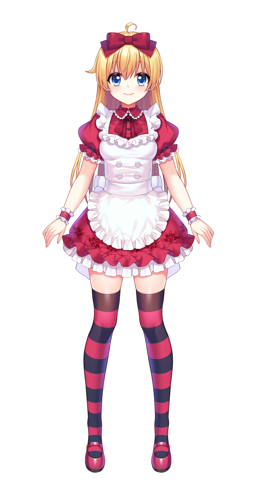
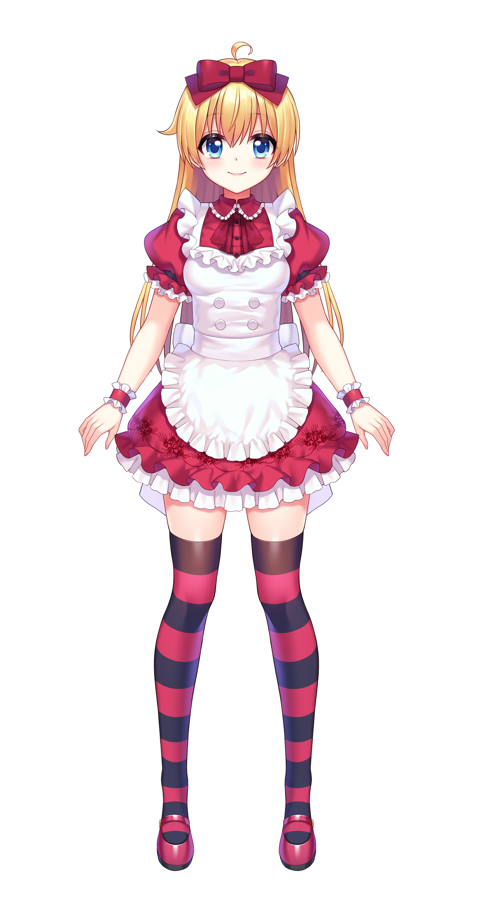
Icotsu
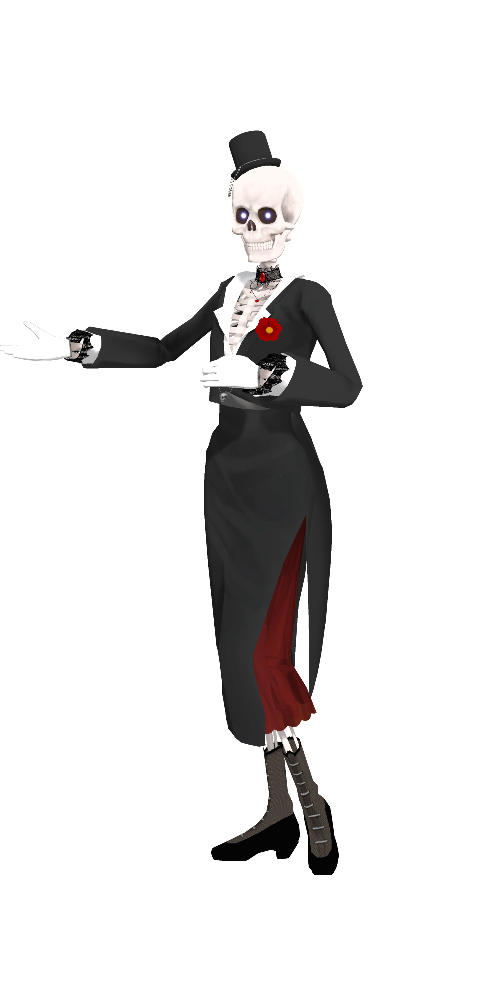
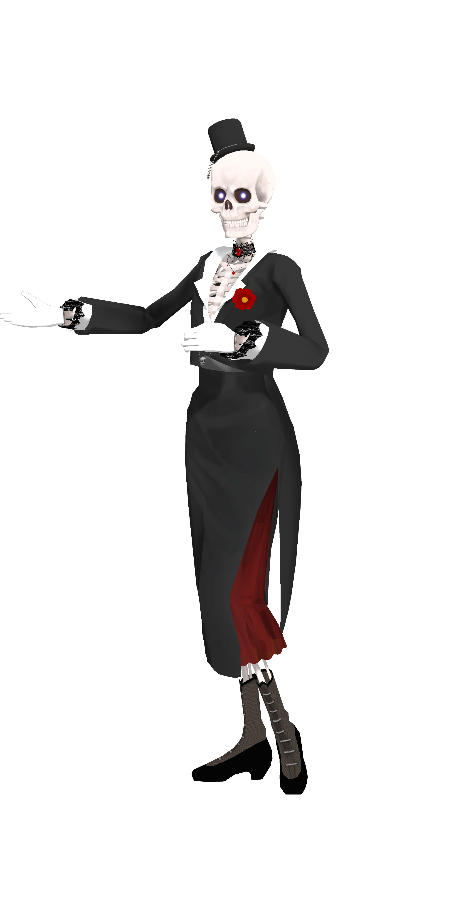
愛ひとは
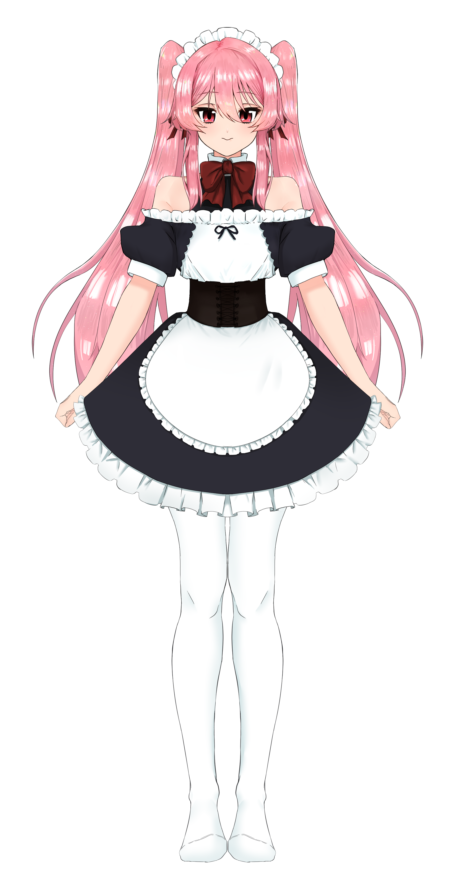
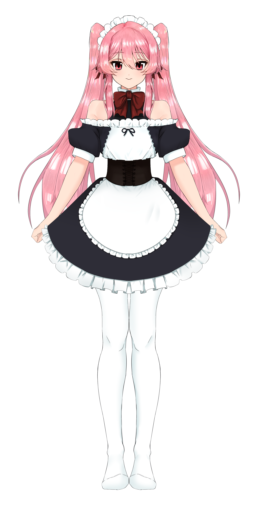

蘭蟲
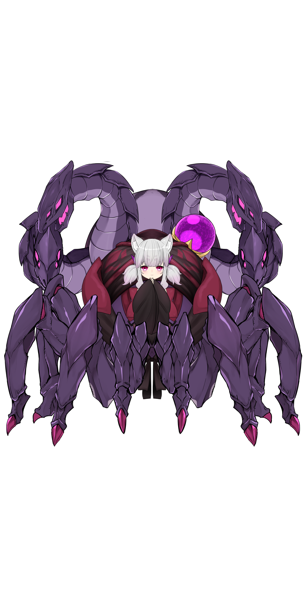
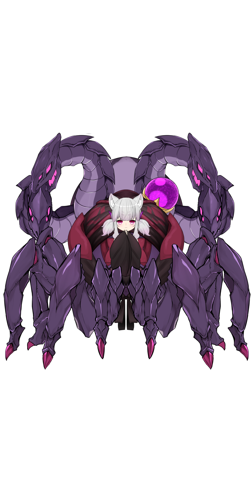
連絡先
私たちに連絡を取る際はこちらからお願いします。公式Twitterアカウント: @2170tkbunkasai
Tweets by 2170tkbunkasai
公式Youtubeアカウント: 筑駒70期2-1HRデコ
公式メールアドレス: 2170tkbunkasaideko@gmail.com
サイト作成責任者(うさぎ)のメールアドレス: iamskyrabbit@gmail.com
VTuber作成の責任者(オリハ)のメールアドレス: danluoriha@gmail.com